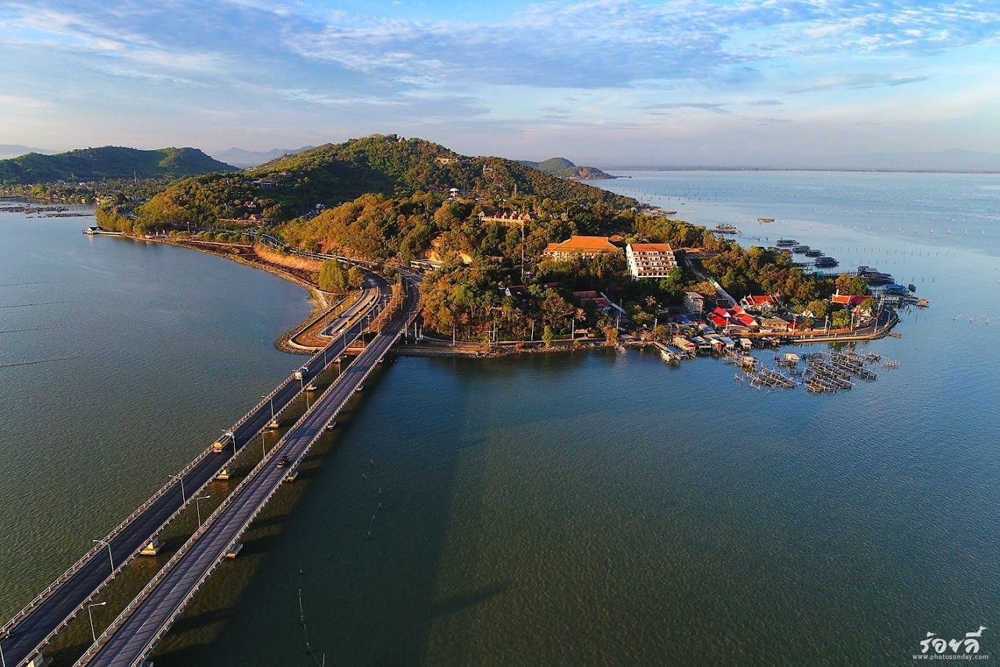

ประวัติของเกาะยอ
เกาะยอเป็นเกาะที่ตั้งอยู่ในอำเภอเมืองสงขลา จังหวัดสงขลา ประเทศไทย เป็นเกาะที่มีขนาดเล็กและมีความสำคัญทางประวัติศาสตร์ เนื่องจากมีความเกี่ยวข้องกับการค้าขายและวัฒนธรรมต่างๆ ของท้องถิ่นมาอย่างยาวนาน เกาะยอเป็นสถานที่ท่องเที่ยวที่สวยงาม และเป็นที่รู้จักของนักท่องเที่ยวทั้งชาวไทยและต่างชาติ มีความหลากหลายของธรรมชาติ ทั้งชายหาดที่สวยงามและแหล่งท่องเที่ยวทางประวัติศาสตร์
สถานที่ท่องเที่ยวบนเกาะยอ
เกาะยอมีหลายสถานที่ท่องเที่ยวที่น่าสนใจ ได้แก่:
- ชายหาดเกาะยอ: เป็นหาดที่มีทรายขาวสะอาดและน้ำทะเลใส เหมาะสำหรับการพักผ่อนและเล่นน้ำ
- วัดเกาะยอ: วัดเก่าแก่ที่มีสถาปัตยกรรมที่สวยงามและมีความสำคัญทางศาสนา
- ตลาดเกาะยอ: ตลาดที่มีสินค้าพื้นเมืองและของฝากจากเกาะยอ
เส้นทางสำหรับการเดินทางไป เกาะยอ
ดูเส้นทางบน Google Mapsภาพของเกาะยอ
